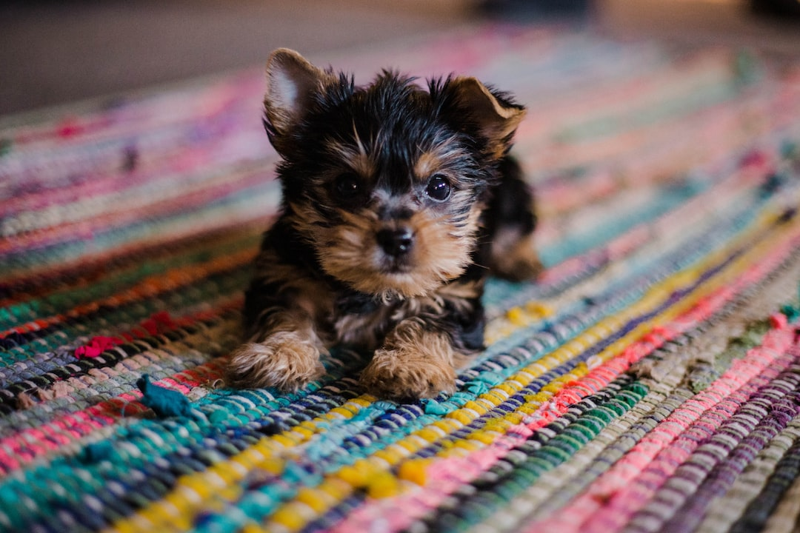

Teacup
Teacup dogs only weigh 2kg at most
- Life Span: 6 to 10 years
- Food: Eukanuba Small Breed Puppy
- Average Price of Teacup: $750
- Toy for Teacups: Hide-A-Squirrel
Teacup puppies are a type of puppy that are very tiny in size. Their name teacup puppies come from the fact that they are so small you can fit them into a teacup or a mug. They are also referred to as pocket-size puppies and micro dogs. They are not just small in size, but they are very lightweight as well.